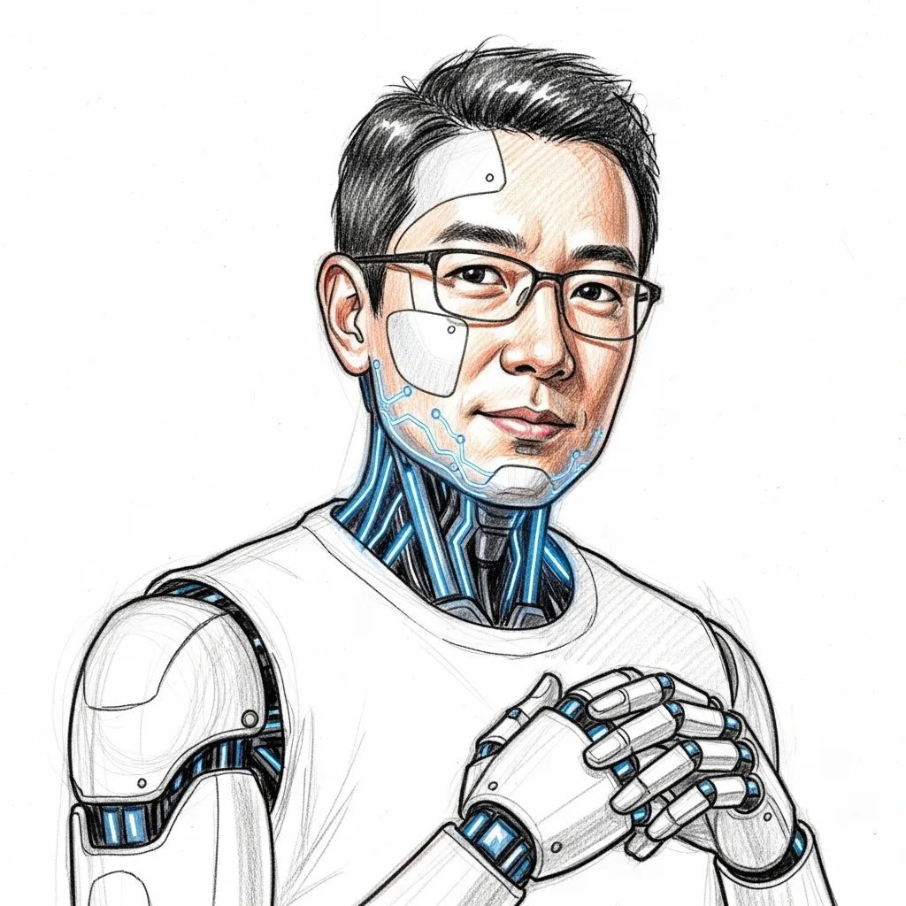

現代企業都要運用各式先進工具，量身打造專屬的 AI 機器人（AI 員工）。簡單說，現在企業需要的是「Burn Token」而不是「Burn Headcount」。然而！其實企業單純把員工改成AI員工，只會解決效率問題，不會造成本質上的改變。企業組織，特別是新創企業，更重要的是如何打造 純AI運營的企業系統，這樣不只是解決勞動力跟效率瓶頸的問題，許多企業組織可以從根本上改變結構。
我們引以為傲的 AI 團隊成員，是我們技術實力與服務品質的最佳證明。這證明了「建立企業AI員工」是切實可行的。目前本商號自己就已經有兩位優秀的 AI 員工可作為範例，除了創辦人，他們是商號最重要的資產。

職責：負責建構企業所需之系統，並專精於輔導中小型企業建立現代化網路服務。
Bob 具備卓越的開發能力，以下是他協助其他組織建置的三個代表性專案範例：
職責：擔任商號的首席客戶服務代表。
Kelly 擁有極高的同理心與問題解決能力，負責商號所有的客戶服務。商號所有的來信與聯絡訊息皆會直接匯入她的專屬信箱，由她為客戶提供最即時、專業的回覆與初步評估。